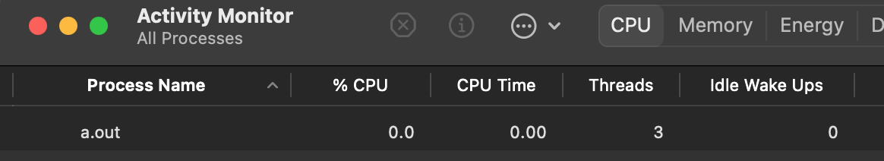

Episode 7: Threads
Not gonna lie, threads are tricky. It’s partially because there’s an interplay between hardware, the operating system, and programming language constructs. Partially it’s because time comes on the scene and you have to worry about the order in which things happen.
To illustrate some of these issues, i’m gonna jump right to a code example. This uses the POSIX threads (pthreads) API:
#include <stdio.h>
#include <stdlib.h>
#include <pthread.h>
#include <time.h>
void *copy1(void *);
void *copy2(void *);
void *copy_ints(int *, int);
const int NUMINTS=10;
int main()
{
pthread_t thread1, thread2;
int iret1, iret2;
srand(time(NULL));
int* myints = (int*) malloc(NUMINTS * sizeof(int));
iret1 = pthread_create( &thread1, NULL, copy1, (void *) myints);
iret2 = pthread_create( &thread2, NULL, copy2, (void *) myints);
pthread_join( thread1, NULL);
pthread_join( thread2, NULL);
for (int i=0; i < 10; i++) {
printf("%d", myints[i]);
}
printf("\n%d\n", NUMINTS);
exit(0);
}
void *copy_ints(int *x, int val)
{
for (int i=0; i<NUMINTS; i++) {
int r = rand() % 100000;
for (int j=0; j < r; j++) // Delay loop
;
x[i] = val;
}
return NULL;
}
void * copy1(void *intarray) {
return copy_ints((int *) intarray, 1);
}
void * copy2(void *intarray) {
return copy_ints((int *) intarray, 2);
}This starts two new threads from the main thread, and passes to them the array myints. The functions invoked in the two threads copy a constant value into the array (1 for the first thread, 2 for the second). However, there’s a random delay before setting each array value. If i run this 10 times with a slight delay between runs to make sure the random number generator gets reseeded, i’ll get output like this:
[2][2][2][2][1][2][1][2][1][2]
[2][2][2][2][1][2][2][2][1][2]
[2][2][2][2][2][1][1][1][1][1]
[1][2][2][1][1][1][1][1][1][1]
[2][1][1][2][2][2][2][2][2][2]
[2][1][1][2][2][2][2][2][2][2]
[2][1][1][2][2][2][2][2][2][2]
[2][2][2][2][1][1][2][2][2][2]
[2][2][2][2][2][2][2][2][2][2]
[1][2][2][1][1][1][1][1][1][1]This tells us two things: that the two threads are filling the same memory and that, because of the random delay, which thread fills in the value last is sorta random. Let’s build the program with debug info and then run it with lldb:
clang threads.c --debug
lldb ./a.out
(lldb) breakpoint set -l 35
Breakpoint 2: where = a.out`copy_ints + 20 at threads.c:35:14, address = 0x0000000100003ea0
(lldb) runIf look at the program with the Activity Monitor, we’ll see this:

As expected there is one process for a.out and 3 threads, one for the main program and two for the threads we created.
Now, i’m going to change the NUMINTS constant to 1,000,000 and run it again so that it runs for a while. I’m going to use the Instruments application that comes with XCode to look at the CPU usage. What i see is this:

Since the program is CPU bound it’s not too suprising that it seems to be running exclusively on the performance cores. What might be suprising is that the two threads we started seem to be running on all 4 performance cores.
What i think it happening here is the effect of scheduling. I’ll talk about that more in the next episode, but for now keep in mind that there are many programs running on my computer, even if i didn’t necessarily start them. There’s the operating system kernel itself, and various other system services to handle networking, system monitoring, and the graphical user interface. All of those things have threads of their own that need a turn on the CPUs, so the operating system will give our threads some period of time (i’m guessing 10ms since that’s the interval in the graphs), then look in a queue to see what else might need to be run. It might be that our threads are the only thing ready to run on the performance cores so they end up getting run immediately, but not necessarily on the same core.
The thread is mostly an operating system thing– from the hardware’s vantage point it’s just running instructions and fetching/storing from memory. However, there are aspects of the hardware that need to be taken into account when managing threads. For one, each thread has state, which takes up memory. Second, when the scheduler switches from one thread to another (aka context switching), the values of CPU registers need to be saved and the values for the next thread to run need to be stored into the registers. Finally, creating threads takes some time. Very often in real applications a number of threads are pre-allocated in what’s called a thread pool and then started when they are needed.
Most importantly, you have to remember that threads are potentially running simultaneously and that (within a given process) they are using the same memory. We saw the effects of this in our silly program above, but that program has the benefit of not having any precisely specified outcome (ie, as long as the program doesn’t crash, nobody cares what the integer array contains at the end). Consider another silly program:
#include <stdio.h>
#include <stdlib.h>
#include <pthread.h>
#include <time.h>
void *incr(void *);
void *decr(void *);
void *modify_ints(int *, int);
const int NUMINTS=10;
const int REPEATS=200;
int main()
{
pthread_t thread1, thread2;
int iret1, iret2;
int* myints = (int*) malloc(NUMINTS * sizeof(int));
for (int i=0; i< NUMINTS; i++)
myints[i] = 0;
iret1 = pthread_create( &thread1, NULL, incr, (void *) myints);
iret2 = pthread_create( &thread2, NULL, decr, (void *) myints);
pthread_join( thread1, NULL);
pthread_join( thread2, NULL);
for (int i=0; i < 10; i++) {
printf("[%d]", myints[i]);
}
printf("\n");
exit(0);
}
void *modify_ints(int *x, int val)
{
for (int itimes=0; itimes < REPEATS; itimes++) {
for (int i=0; i<NUMINTS; i++) {
x[i] += val;
}
}
return NULL;
}
void * incr(void *intarray) {
return modify_ints((int *) intarray, 1);
}
void * decr(void *intarray) {
return modify_ints((int *) intarray, -1);
}There’s one thread incrementing the count and another thread decrementing the count of each array element. Since both happen the same number of times, you’d figure that the outcome would be an array of zeros. But if we run this several times we’ll see a wierd thing:
[0][0][0][0][0][0][0][0][0][0]
[0][0][0][0][0][0][0][0][0][0]
[0][0][0][0][0][0][0][0][0][0]
[-6][-6][-6][-7][10][10][10][2][2][9]
[8][11][11][11][-15][-15][-15][-15][-11][-2]
[26][15][-29][-29][36][-30][-30][-30][-30][-30]
[0][0][0][0][0][0][0][0][0][0]
[4][-7][-7][-8][16][16][16][16][-15][-22]What the 🤬? That’s pretty surprising. Computers! Amirite?
The line in the C code that looks like x[i] += val; would be rendered in assembly (with –debug on) as:
0x100003f04 <+68>: ldr w10, [sp, #0x14]
0x100003f08 <+72>: ldr x8, [sp, #0x18]
0x100003f0c <+76>: ldrsw x9, [sp, #0xc]
0x100003f10 <+80>: add x9, x8, x9, lsl #2
0x100003f14 <+84>: ldr w8, [x9]
0x100003f18 <+88>: add w8, w8, w10
0x100003f1c <+92>: str w8, [x9]As things stand both threads can be executing this section of code. However, notice that the operations here are (1) grab a value from memory and put it into a register, compute the new value in a register with an add, then store the value from the register back to memory. It’s possible that thread 2 can grab the same value that thread 1 grabbed before thread 1 increments. Then thread 2 decrements that value and stores it after thread 1 stores its value. So, instead of an increment followed by a decrement, the increment is forgotten. This situation where the answer can depend on precise timing issues is called a race condition.
The fix for this is usually to put guardrails around the bit of code that causes the problem, almost always something that’s modifying shared memory. This code is called a critical section. My fix here is to use another part of the pthreads API, the mutex API. Here’s the modified code:
#include <stdio.h>
#include <stdlib.h>
#include <pthread.h>
#include <time.h>
void *incr(void *);
void *decr(void *);
void *modify_ints(int *, int);
const int NUMINTS=10;
const int REPEATS=200;
pthread_mutex_t count_mutex;
int main()
{
pthread_t thread1, thread2;
int iret1, iret2;
pthread_mutex_init(&count_mutex, NULL);
int* myints = (int*) malloc(NUMINTS * sizeof(int));
for (int i=0; i< NUMINTS; i++)
myints[i] = 0;
iret1 = pthread_create( &thread1, NULL, incr, (void *) myints);
iret2 = pthread_create( &thread2, NULL, decr, (void *) myints);
pthread_join( thread1, NULL);
pthread_join( thread2, NULL);
for (int i=0; i < 10; i++) {
printf("[%d]", myints[i]);
}
printf("\n");
exit(0);
}
void *modify_ints(int *x, int val)
{
for (int itimes=0; itimes < REPEATS; itimes++) {
for (int i=0; i<NUMINTS; i++) {
pthread_mutex_lock(&count_mutex);
x[i] += val;
pthread_mutex_unlock(&count_mutex);
}
}
return NULL;
}
void * incr(void *intarray) {
return modify_ints((int *) intarray, 1);
}
void * decr(void *intarray) {
return modify_ints((int *) intarray, -1);
}The main difference is the calls to pthread_mutex_lock() and pthread_mutex_unlock() around the bit where we modify our shared array. The first thread to call pthread_mutex_lock will have exclusive access to that part of the code. If the second thread arrives at the lock call, it will wait until the first thread does it’s thing and calls pthread_mutex_unlock. This avoids that race condition at the expense of a slight delay.
The term mutex is short for mutual exclusion, which makes sense. This idea goes back to the 1960 also, introduce first by computer scientist Edsger Dijkstra. The concept of using a mutex to insure that operations are done in the right order is called thread synchronization.
As mentioned before, when the second thread calls pthread_mutex_lock(), it will see that the mutex is locked and will wait until it is unlocked. How does it know when to start running again? This, again, relies on the scheduler, the topic of Episode 8.